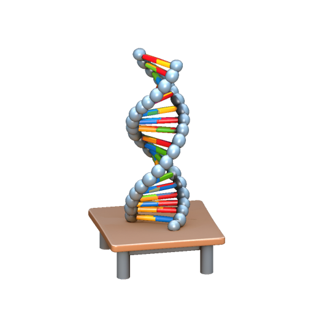
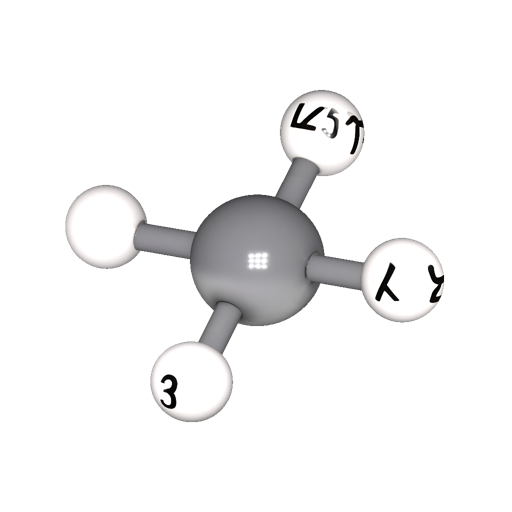
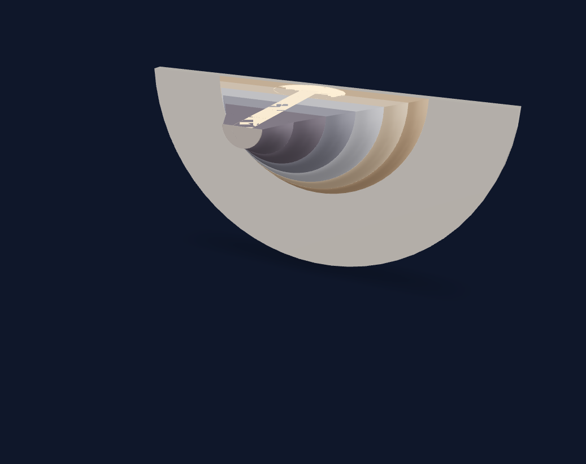
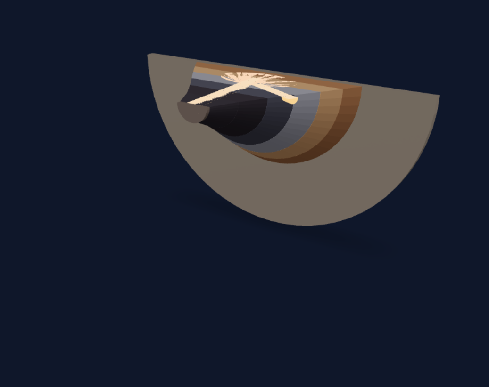

六件产物全部来自本机真实生成，不是示意图。路线 A（文生 3D）出的是 GLB 模型文件； 路线 B（代码教具）是零依赖单文件 HTML；路线 C（自建建模）做了剖面。 点「打开预览」可在浏览器里拖拽旋转、滚轮缩放。
初中地理「地球的运动」。可转着看地轴倾斜 23.5°，说明四季成因。

高中生物「遗传信息传递」。双螺旋结构、碱基配对，学生转一圈数碱基对。

高中化学「有机分子构型」。正四面体结构，键角 109°28′ 从任何角度都成立。
a / b / c 三个滑块实时改，表面积与体积跟着变，公式同步代入。a=b=c 时提示"此刻它是正方体"。

五层地层 + 岩浆房 + 主侧通道。Blender 5.2 建模，光影材质最自然，适合精品课。

同样结构，纯 Python 建模 30 分钟出件，不装 Blender。适合先验证教学价值再决定投入。